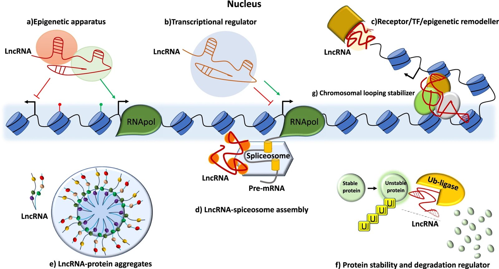

Research
RNA drug discovery,
built on lncRNAs
We are studying RNA biology, particularly focusing on long noncoding RNAs (lncRNAs). We aim to achieve cutting-edge RNA drug discovery by utilizing molecular biology and bioinformatics.
Our vision To elucidate the physiological significance of long non-coding RNAs and to develop pharmaceuticals for diseases that have been untreatable until now.
Why Focus on Long Noncoding RNAs?
To unravel the mysteries of life and open doors to innovative medical breakthroughs, we are focusing on long noncoding RNAs (lncRNAs). These enigmatic molecules, despite not coding for proteins, play crucial roles in supporting the very foundations of life. Since the discovery of HOTAIR in 2007, the world of lncRNAs has continued to astound us with its surprises and potential. LncRNAs are involved in various life processes, from regulating gene expression and maintaining chromatin structure to determining cell fate. This vast frontier not only opens new horizons in biology but also holds immense promise for understanding and developing treatments for numerous diseases.
How Do We Research and Apply lncRNAs?
Our group is advancing lncRNA research and application through the following approaches:
1
Functional Elucidation
We are unraveling the functions of the estimated tens of thousands of lncRNAs.
2
Disease Correlation
We investigate the relationships between various diseases and lncRNAs to identify new therapeutic targets.
3
RNA Therapeutics
We aim to develop innovative drugs that leverage the unique properties of lncRNAs.
Through these research efforts, we aspire to open a new chapter in life sciences and revolutionize the fields of medicine and pharmacology.
What Are lncRNAs?
Long noncoding RNAs (lncRNAs) are a type of RNA with the following characteristics:
- Transcripts with a length of 200 nucleotides or more
- Not translated into proteins
- Perform diverse roles within cells
Some representative lncRNAs include:
These lncRNAs offer new perspectives for understanding the essence of life while simultaneously holding the potential for developing innovative therapies. The world of lncRNAs, filled with unknown possibilities, provides us with infinite opportunities for exploration.

Cancer Gene Therapy volume 29, pages 1866–1877 (2022)
Theme 1
Elucidating lncRNA Functions in Humans and Mice
Human and mouse genomic DNA are approximately 99% identical, with many similarities in lncRNAs as well. However, lncRNA expression levels and functions can vary between species, making comparative studies crucial for a deeper understanding. LncRNAs have been implicated in various diseases, including cancer, neurodegenerative disorders, and autoimmune diseases. By studying lncRNAs, we aim to develop new diagnostic tools and treatments, as well as create novel therapeutics by modulating lncRNA functions to regulate cellular processes.
Theme 2
RNA-Protein Interaction Network Analysis Using Machine Learning
Machine learning can automatically detect complex patterns in vast amounts of data that might be overlooked by human analysis. By applying this technology to lncRNA research, we aim to uncover functions and mechanisms that traditional research methods have not yet revealed. Specifically, we are developing a system to predict interactions between lncRNAs and RNA-binding proteins using machine learning, with the goal of discovering numerous previously unknown interactions.